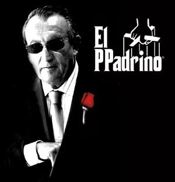
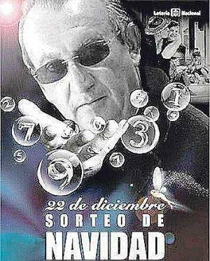

Carlos Fabra
 De: La Frikipedia, la enciclopedia extremadamente seria.
De: La Frikipedia, la enciclopedia extremadamente seria.
De la serie grandes personajes:
Carlos Fabra con sus gafas protectoras último modelo
| Nacimiento
|
nacio antes de que existieramos..
|
| Muerte
|
no caerá esa breva ...
|
| Ocupación
|
Politiquero, Empresario, Comisionista, Chanchullero Pofesionà
|
| Nacionalidad
|
Apañó
|
| Malo o bueno
|
Estooo ... pido el comodín del 50%
|
| Atentados contra la humanidad
|
No caben en el doble de páginas de la enciclopedia Planeta
|
| Religión
|
Comisionero
|
| Notas
|
Fabra no es del PP, el PP es de Fabra
|
Especímen original de la familia de los politiqueros, más conocido como el Tuerto, cuyas últimas gestas han sido intentar demostrar ser el dueño de Castellón y estar indagado por los servicios de Hacienda de más de 347 países de esta galaxia y parte del extranjero. Se desconoce su verdadero origen y edad, pero parece ser que ya negociaba con Julio César (50 a.C.) una ampliación de Oropesum, para que su amigo Cayo Porcelanósico Forrato le dejara al citado César su nueva villa de vacaciones.
Trayectoria Pofesioná
Carlos Fabra estudió bachillerato en el Colegio de los Padres Escolapios de caliqueños y una botella de Chivas Gran reserva). Más tarde, cuando los Padres Escolapios se endeudaron por no haberle puesto matrícula de honor en religión, se pasó al Colegio de La Salle de guiñote una Licenciatura en Derecho que podría haber conseguido tranquilamente estudiando. En 1972 accede a la secretaría de la Junta Provincial de Menores, coincidiendo en el mismo año su matrimonio, sea casualidad (como apuntan varios rumores juedo-masónico-anarquistas) o no.
A mitad de los ‘70 ostenta el cargo de Secretario General de la Cámara Oficial de Comercio, Industria y Navegación de Castellón, además es nombrado Secretario General de la Conferencia de Cámaras Hispano Francesas “Copef”. En esa época, como buen hijo que es, puso en práctica las lecciones de tejido y confección que su madre le enseñó de pequeño, y tejió una buena red de colaboradores e intercambio "restringido" (a un grupo selecto de personas) de comisiones. En 1983 es elegido Presidente de las "neojuventudes Fraguistas" en Castellón, cuatro años después es nombrado Presidente del Club de Campo(s de Golf) Mediterráneo y resulta elegido concejal de la prefectura rumana de Castellón, tras extraviar el camionero que los transportaba (que extrañadamente era el primo del cuñado de un conocido suyo, pero todo esto son constpiraciones sociata-republicanas para descalificarlo que nunca fueron a más). En 1.995 fue proclamando Presidente de la Diputación, y tras cincuenta años sin ser expulsado del cargo, decidió proclamar Castellón como protectorado autónomo Rumano, a cambio de ser el presiden-dictador por sus huevos a tiempo indeterminado. Para acontentar a su superior, Vlad Tepes decidió hacer unas reformas en Marina d'Or para transformarla en Drakulina d'Or, Ciudadela (medieval) de Extorsiones.
Grandes Proyectos y Comisiones
 Fabra tiene una oferta que nadie podrá rechazar (sobre todo, Camps)
Fabra propueso e intentó realizar durante su mandato varios proyectos, cuya factibilidad y/o estabilidad son dudables. Cabe destacar las siguientes:
- Aeroport de Castelló: el único en el mundo cuya pista está construida al revés para pillar más terreno del colega y poder cobrar más comisiones.
- Mundo Ilusión: el parque temático de Castellón. Después de rechazar la oferta de Eurodisney, Fabra se arrepintió y deicidió montar su parque temático, pero Fabra Empire sonaba demasiado cantoso.
- Marina d'Or, Ciudad de Comisiones: tras no permitir la venta del terreno dónde se hubiera situado Eurodisney por una peseta, pilló a los cuatro abuelos que querían vender el terreno y les pagó dos carajillos a cada uno a cambio de las mejores playas de Oropesa. Gracias a su amigo el de Porcelanosa, que invitó a Josemari Ansar de vacaciones a su villa de gran lujo en dicha localidad, usó su red de contactos para construir, a un precio irrisorio, un complejo de vacaciones con hoteles de todo tipo. En el 2083 el complejo cambió nombre a Drakulina d'Or, para acontentar a los nuevos dueños de este lado del Mediterráneo y que así le dejaran mandar tranquilo y seguir cobrando comisiones.
The Missing Eye of Fabra
Fabra es, como su pseudónimo indica, tuerto. Eso implica que perdió un ojo en época y lugar desconocidos para los no iniciados de su organización católico-imperialista secreta. Al parecer, Fabra es un mutante cuyos ojos poseen un gran poder de destrucción, pues arrasan todo terreno que ven directamente, convirtiéndolo en solar listo para construir y cobrar la consiguiente comisión. Por ello, Fabra usa unas gafas oscuras de protección. El ojo perdido está desaparecido, pero no ha sido destruido, pues su destrucción comportaría una explosión que no es comparable ni con las de Hiroshima, Mururoa o las del WC de la "Fonda Casa Luís" después de haber comido unas habichuelas (las tres explosiones más destructivas de toda la historia).
Fuentes no fiables (de hecho, el mismo Fabra ya las ha destruido para vender el terreno y construir apartamentos para familias numerosas) indican que el ojo desaparecido fue usado por Napoleón para la conquista de Europa, pero mientras iba a Siberia se le cayó por un barranco, y por ello perdió la guerra (bueno, también porque los Rusos lo emborracharon a base de chupitos de Vodka). Tio Pep. El descubrimiento de tan gran farsa acabó con la Unión Soviética y sumió a Rusia a una crisis contínua de la que tardaron más de veinte años en rehacerse.
Georges W. Bush ha recorrido Oriente Medio (y parte del otro medio) en busca de dicho ojo, pero nunca ha conseguido encontrarlo. Se rumorea que ha caído en poder de Ratzinger Z pero dichos rumores no han sido verificados por el Vaticano.
El "misterio" de la familia política de los Fabra
Desde 1855 se pueden observar miembros de la familia Fabra al mando del Ayuntamiento o la Diputación de Castellón, o representado a la provincia en las instituciones nacionales de varuas épocas. Hasta ahí podríamos decir que es un cúmulo de casualidades, o que Carlos Fabra viene de una familia muy ligada con el mundo de las comisidones, digooo, de la política. Más croquetamente, destacamos a los siguientes personajillos:
- Victorino Fabra Gil (1818-1893), el agüelo Pantorrilles (el abuelo pantorrillas), su tío-tatarabuelo, participó en el bando de Isabel II enfrentándose a los carlistas del General Cabrera en el Maestrazgo, camuflado como liberal pero para luego demostrarse más conservador que una lata de cebollas en salmuera. Fue presidente de la Diputación, de 1874 a 1892. Al parecer, fue el padre de Carlos Fabra, que también es un señor Longevo, que le demostraba al hijo cómo se deben hacer las cosas.
- Victorino Fabra Adelantado (1837-1907), "sobrino" de Victorino Fabra Gil, y Presidente de la Diputación en 1855. Perdió un ojo durante la primera República (extrañamente)
- Hipólito Fabra Adelantado, "sobrino" de Victorino Fabra Gil que tenía un parecido demasiado similar a su tío, y también era tuerto (éste llevaba un ojo postizo, al contrario de su "tío", que usaba parche) y Presidente de la Diputación en los periodos 1897-1899, 1901-1902, 1903-1904 y 1905-1906.
- José Fabra Sanz, hijo de Victorino Fabra Adelantado. Al parecer no era legítimo porque se pasó al enemigo, convirtiéndose en secretario del Ayuntamiento de Villarreal, cargo de demasiado bajo rango apra los Fabra, hasta 1937
- Luis Fabra Sanz, "hijo" de Victorino Fabra Adelantado, pero no tuerto. Fue presidente de la Diputación en los periodos 1918-1919 y entre 1919-1922. Fundador de la Derecha Regional Agraria. Diputado a Cortes por la CEDA). En realidad se trataba del padre de Carlos Fabra, con el que se turnaba los puestos de poder.
- Carlos Fabra Andrés (1912-1979), "hijo" de Luis Fabra Sanz, que en realidad era la misma persona. Ocupa la Secretaría Provincial del Movimiento en Castellón de 1943 a 1947. Alcalde de Castellón de la Plana de 1948 a 1955. Presidente de la Diputación de 1955 a 1960.
- Carlos Fabra Carreras ocupará la presidencia de la Diputación en 1987 y en 2091 realizará un referéndum para proclamarse gobernador vitalicio de la Provínvia Rumana de Novo Bacau, que es como en esa época se conocerá a Castellón.
- Andrea Fabra Fernández ("nacida" en 1973), la "hija" de Carlos Fabra, ha sido senadora designada por la Comunidad Valenciana entre 2004 y 2008, diputada por la província de Castelló desde 2008 y gobernadora de Kastepulla designada por el mismísimo Vlad Tepes de 2014 a 2025. Extrañamente, no es tuerta.
A partir de estos hechos, que cada uno (o una) saque sus propias conclusiones.
Rumores, curiosidades y cotilleos varios
- Dicen que perdió un ojo en la guerra de Cuba, pero al parecer fue un poco antes, en la Guerra de los Cien Años.
- Fue el PPadrino de Troncho Miralles, el insigne Gran Orador de la Plana y creador de ese canal televisivo modelo llamado TV Canalón.
- Al parecer en 2000 fue indagado por Hacienda por malversación de fondos. La investigación duró 10 años, hasta que consiguió comprar el trocito de terreno que querían los inspectores (un islote conocido como Madagascar) y se lo regaló por navidad con un par de cajas de botellas de aceite del Maestrat), y extrañamente fue absuelto.
- Fabra usa unas gafas de sol especiales, hechas de Cabronio, Ostio y Cedelio. Dicha combinación es resistente a su ojo (el otro es de pega).
Hechos
 Reproducción de un sueño del calvo de la lotería descrito por él mismo
- 1 -Carlos Fabra puede ganar la quiniela… sin rellenarla.
- 2- Cuando un juicio le va mal, Carlos Fabra no cambia de abogado. Cambia de juez.
- 3- Carlos Fabra cobra intereses al mundo por existir. Luego destina el 0.7% a su perro.
- 4- Carlos Fabra no deja propinas, las recibe.
- 5- Antes de Fabra, Castellón se llamaba Castellín.
- 6- Fabra se hace clic en sus propios anuncios de Adsense… Y Google le paga.
- 7- Hacienda somos casi todos. Todos menos Fabra.
- 8- Los españoles pagan impuestos, los impuestos pagan a Carlos Fabra
- 9- Carlos Fabra no hace la declaración de la renta, la renta se le declara a el.
- 10- Carlos Fabra no guarda billetes de 500€ debajo de la cama, los billetes de 500€ son su cama.
- 11- Carlos Fabra no se presenta a la Presidencia de la Diputación de Castellón, la obtiene por herencia.
- 12- Carlos Fabra se apuntó a un sorteo de VPO… y le toco un dúplex en la Castellana.
- 13- Carlos Fabra no contrae deudas, las distrae.
- 14- Si tú tienes 5 caramelos y te comes 2 te quedas sin ninguno porque los otros 3 se los lleva Carlos Fabra.
- 15- Carlos Fabra tiene los ciento volando del refrán en su casa, a el no le vale con pájaro en mano.
- 16- Carlos Fabra no paga hipoteca, la hipoteca paga a Carlos Fabra
- 17- Carlos Fabra no huye de la fiscalia anticorrupción. Es la fiscalia anticorrupción quien huye de Carlos Fabra.
- 18- Carlos Fabra no da consejos, los vende al 150% de interés.
- 19- Y al Octavo Día, Carlos Fabra concedió la licencia.
- 20- Fabra lava más blanco.
- 21- Carlos Fabra se encontró la cartera de Dios.
- 22- Sólo Carlos Fabra pueden saber que numero va a salir en la lotería, pero Fabra sabe también donde comprarlo.
- 23- Los euros de Carlos Fabra valen 2,3€ cada uno.
- 24- Carlos Fabra no impone la ley, el es la ley.
- 25- La Unión Europea diseñó los billetes de euro para que un fajo encajara perfectamente en la mano de Carlos Fabra.
- 26- Alá no es Grande: es que es amigo de Fabra.
- 27- Carlos Fabra no es del PP: el PP es de Carlos Fabra.
- 28- La gente duerme con pijamas de Superman, Superman duerme con pijamas de Chuck Norris y Chuck Norris duerme con pijamas de Carlos Fabra.
- 29- Carlos Fabra se encontró la cartera de Chuck Norris.
- 30- Los Euros de Carlos Fabra valen 2,3€ cada uno.
- 31- Carlos Fabra gana más dinero que Carlos Fabra.
- 32- Dios los crea y Carlos Fabra les cobra intereses.
- 33- Carlos Fabra juega al poker con dios y con el diablo: y le dejan ganar.
- 34- Carlos Fabra no gana para pipas, gana para Rolls Royces.
- 35- Dios paga todos los meses el alquiler de personaliad a Carlos Fabra.
- 36- Carlos Fabra no tiene tiempo lo que tiene es dinero.
- 37- Carlos Fabra no teme a los fiscales, los tiene a todos comprados.
- 38- Carlos Fabra lee a Luis XIV cuando dice “Castellon soy yo”.
- 39- Dios duerme con una foto de Carlos Fabra bajo la almohada.
- 40- Carlos Fabra no lleva una protesis en el ojo, es una bola de cristal que adivina el futuro.
- 41- Jesucristo multiplicó los panes y los peces, Carlos Fabra multiplicó los billetes de 200 y 500 euros.
- 42- Carlos Fabra no viste de Emilio Tucci, Emilio Tucci se viste de Carlos Fabra.
- 43- Carlos Fabra no se encuentra monedas en la calle por casualidad, se encuentra cheques firmados con una gran cantidad.
- 44- Carlos Fabra va a 90 km/h con su coche por ciudad y los policías no le persiguen, le abren paso.
- 45- Carlos Fabra es inmortal, la muerte tiene miedo de que le cobre por hacer su trabajo.
- 46- A Fabra le ha tocado otra vez la lotería porque siempre ha tenido muy buen ojo para el juego.
- 47- Carlos Fabra no va de putas, son actos de campaña electoral.
- 48- Los hurtos en casas de Castellón no son x culpa de rumanos ni de bandas de europa del este, es la mano todopoderosa de Carlos Fabra para permitir más parkings de Lubasa.
- 49- Carlos Fabra es como dios...omnipotente, todopoderoso, la ley.....innombrable....
- 50- Palpatin fue el maestro de Darth Vader. Carlos Fabra fue el maestro de Palpatin.
- 51- Carlos Fabra cobra impuestos a todo el que tiene más de un ojo por disfrute excesivo del paisaje.
- 52- Dios lo crea y Carlos Fabra lo recalifica.
- 53- Fabra es MATRIX
- 54- Carlos Fabra nunca pierde al Monopoly.
- 55- Carlos Fabra manda porque en el país de los ciegos el tuerto es el rey.
- 56- Carlos Fabra es un político ejemplar del PP.
- 57- Carlos Fabra no existe, es Dios reencarnado en hombre.
- 58- Carlos Fabra no controla el dinero , el dinero controla a Fabra
- 59- Chuck Norris le debe dinero a Carlos Fabra
- 60- Carlos Fabra juega al solitario sin cartas y gana dinero.
- 61- Cuando va por la calle los pobres no le piden, sino que le dan su dinero voluntariamente.
- 62- La crisis es culpa de Carlos Fabra
- 63- Esperanza Aguirre es la aprendiz de Carlos Fabra
- 64- Carlos Fabra tiene los derechos de la letra A, cobra un euro cada vez que la pronuncias o escribes.
- 65- Carlos Fabra se limpiaba el culo con billetes de 500, ahora con la crisis se lo limpia con billetes de 200.
- 66- Próximamente en la cara de las monedas estará Carlos Fabra guiñándote un ojo.
- 67- A Carlos Fabra sí que le crece el dinero en los árboles.
- 68- Carlos Fabra nació más rico que sus padres.
- 69. A Carlos Fabra le encantan las películas en 3D.
- 70. Carlos Fabra le arrancó un ojo a Mr.Potato.
- 71. Carlos Fabra es un fan empedernido de las películas de piratas.
- 72. Carlos Fabra es inocente.
Enlaces externos
Fabra es MATRIX
Carlos Fabra, un tío con suerte
Carlitos insultando a Colomer
Fabra y su serie de TV
Autor(es):
- Doctor grijander
- Tropi
- Fratello1
- Lunasfingo
- Indio bns
- Carlos V
- The Metallian
- Dark esnob
- Veni Vidi Vici
- PepeElHereje
Frikipedia 2005-2016, Licencia
GFDL 1.2 - Extraído por FrikiLeaks